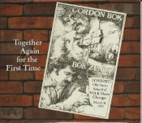

- Other Eyes 2010
- Bold Reynolds
- The Bird Rock
- The Seals
- Captive Water
- The Beaches of Lukannon
- Sarabande's Story
- Gulls in the Morning
- The Maiden Hind
- Spell to Bring Lost Creatures Home
- The Net
- Herring Croon - The Last Verse
- Ocean Station Bravo
- The Brandy Tree
- The Shepherd's Call
- Sherry's Song
- Gordon Bok and Bob Zentz -
- DISC 1:
- Picker and a Grinner
- Judge Proctor's Windmill
- All Around My Hat/Red-Haired Mary/Irish Washerwoman
- I Want My Son to be a Country Boy
- Wrinkle in Time
- Let Me Fish Off Cape St. Mary's
- River of Time
- Mister Brown
- Ivor the Driver
- I Held a Lady
- Hills of Dover
- Modest and Bright Eileen O'Farrell
- Old Zeb
- In My Time
- Garden Song
- My Favorite Song
- Meeting of the Waters/No Awa to Bide Awa
- The Scotsman
- Bob
- DISC 2:
- Mirrors and Changes
- (Some Trust in)Chariots
- The Road and the Miles to Dundee
- Song For Gale
- All the Good People
- Loch Rannoch/Loch Duich/Scarborough Settler's Lament
- Harbour Le Cou
- Turning Toward the Morning
- Long Gone Jones
- Joshua Gone Barbados
- Guadeloupe Dance
- Sweet Song From Yesterday
- Ain't You Got a Right to the Tree of Life
- Daddy Don't You Tell No Lies
Together Again for the First Time 2017
- Then and Now 2016
- Johnny Todd
- A Blues for Sergei
- I'm a Rambler, I'm a Gambler
- Herring Croon
- Grieve's Handy
- The Old Bard Song
- Coshieville
- Tehuacan (Lamento y Danza)
- I'se the B'y
- Fifteen Ships on Georges Bank
- The Ballad of Billy's Man
- Kuulan Polska # 1
- The Sands of Dee
- Acalento
- Rosin the Beau
- Bay of Fundy
- Bolivius
- Along the Famine Road
- Weevily Wheat/Wheat in the Ear
- A Blues for Sergei
- Because You Asked 2012
- Loni
- Isle au Haut Lullabye
- Broken Down Squatter
- My Images Come
- Willem
- Changing Times
- Easy and Slow
- Go East
- Jock Stewart
- Old Fat Boat
- A Song For Angela
- Turning Toward the Morning
- Luz de la Luna
- If I Was a Dog
- Walter's Garden
- Jenny in the Roadstead
- Other Eyes 2010
- Bold Reynolds
- The Bird Rock
- The Seals
- Captive Water
- The Beaches of Lukannon
- Sarabande's Story
- Gulls in the Morning
- The Maiden Hind
- Spell to Bring Lost Creatures Home
- The Net
- Herring Croon - The Last Verse
- Ocean Station Bravo
- The Brandy Tree
- The Shepherd's Call
- Sherry's Song
- In Concert 2006
- Queer Bungo Rye
- Last Shift at the Crowns
- Patrick Spencer
- Plastic Container of Plonk
- Where the Cane Fires Burn
- Canso Straight
- The Angelus
- Inheritance
- Hark Now
- Let The Lower Lights Be Burning
- Wrecker's Prayer
- Collage: Pretty
- Oystershell Road
- Culebra
- Do Something
- Hie Awa
- Apples in the Basket 2005
- Apples in the Basket
- The Recruited Collier
- Los Tres Panuelitos
- The Maiden in Bird's Plumage
- A Shearer's Lament/Waiting For the Rain
- Joropos
- The Black Furrow
- The Old Figurehead Carver
- Heading For Home
- Mussels in the Corner
- Bay St. Mary/In the Cove
- Tie Her Up
- Stone on Stone
- The Hills of Isle au Haut
- Herrings In the Bay 2003
- Herring Croon
- Little River
- Astoria Bar
- The Boats of Peter's River
- O Vento
- El Pescador
- Jack Hinks
- Oh, No More
- Hush Song
- Candlelight Fisherman
- Help Me To Raise 'Em
- Round Our Skiff
- Cannery Shed
- Trochus Boats
- Where is the Light/Memory for Seal Island
- One More Morning
- Dear To Our Island 2001
- Sail, O Believer
- Sandwood Down to Kyle
- Driveway Reel & Thanxty Al Stanley
- Bachelor's Song
- Connemara Cradle Song
- Now I'm Easy
- Moran's Return
- Sufferin'
- Hatu Khara Ols'n
- Poor Angus
- Jock O'Hazeldean
- Los Viejitos
- Long Life to the Moon
- Small Island
- Oh I am Calling
- A Phiuthrag's A Phiuthar
- Bless Ye Fair Maids
- Against The Moon
- In The Kind Land 1999
- Faraway Tom
- Bright Fine Gold
- The Last Battle
- The Stable Lad
- Vidala la Comparsita
- River Drive
- The Kind Land
- Ledge-End of the Fiddler
- Chall Eilibh
- Jim Clancy
- Jones
- The Bressay Lullaby
- Mourning Dove
- Going On
- Lament for Owen Christy/Under the Wind
- Gatherings 1998
- Llegada
- Swell Me Net Full
- Matachines
- Fiddler Dance the Light Strathspey/Kirsteen
- Weldon
- The Parting Glass
- El Parrandero
- The Gift
- Morag/Carmina Gadelica
- Como Llora una Estrella
- Stormy Weather
- To Cyrano
- Bailando Sabaki
- Southern Cross
- Gordon's Farewell
- Neighbors 1996
- Rantin' Laddie
- Geordie
- Homeward Bound
- Danze Della Valle Borbera/Danze di Baolino
- Right Said Fred
- October Song
- Janko (Yanka)
- Blood on the Sails
- Farewell to Nova Scotia
- King Jim/Thankxty Al Stanley
- Frolic (for Guitar and Small Elephant)
- High Barbary
- Peace on Earth
- Sergei's Yupanqui Tune
- One for Winter/Colrain
- Padstowe Chantey
Gordon Bok and Cindy Kallet
- Schooners 1992
- Wiscasset Schooners
- Harp Song of the Dane Women
- Jericho
- Spirit Song of George's Bank
- The Liza Jane
- Boat of Silver
- Schooner Ellenmore
- Crossing the Water
- All My Sailors
- The Death Ship
- Schooner Fred Dunbar & Capt. Dave's Delight
- Another Bay
- Sailor's Carol
- Sailor's Consolation
- Karl Edstrom and the Hesper
- Song for the Bowdoin
- Dear Old Vessels
- Harbors of Home 1998
- Great Valley's Harvest
- From the Lambing to the Wool
- Napoleaon Crossing the Chesapeake Bay Bridge Tunnel/Flight of the Haggis
- We Built This Old Ship
- Pigs Can See the Wind
- The Outside Track
- Gaelic Farmer/Lady's Triumph
- Farthest Field
- Velveteen Love Song
- Old Man's Song
- Harbors of Home
- Rowan Davies
- Dancing at Whitsun
- Wiscasset Schooners
- Turning of the Year
Gordon Bok, Ann Mayo Muir, & Ed Trickett
- Language of the Heart 1994
- Blue Mountain
- Stephen Foster
- Madrecita
- Language of the Heart
- Marco Polo
- Ballinderry
- The Can Do
- Brannvislat
- Huck Finn
- Merlin's Waltz
- Laird O Drum
- Tak a Dram
- That Quiet Place
- Cuckoo/Spotted Pony
- Good Wish
Gordon Bok, Ann Mayo Muir, & Ed Trickett
A Shearer's Lament/Waiting For the Rain
A Song For Angela
Acalento
Against The Moon
All My Sailors
Along the Famine Road
Angelus, The
Apples in the Basket
Another Bay
Astoria Bar
Bachelor's Song
Ballad of Billy's Man, The
Ballinderry
Bay of Fundy
Bay St. Mary/In the Cove
Beaches of Lukannon, The
Bird Rock, The
Black Furrow, The
Bless Ye Fair Maids
Blood on the Sails
Blue Mountain
Boat of Silver
The Boats of Peter's River, The
Bold Reynolds
Brandy Tree, The
Brean Lament
Bressay Lullaby, The
Bright Fine Gold
Broken Down Squatter
Candlelight Fisherman
Can Do, The
Cannery Shed (Stella)
Canso Straight
Cape Ann
Captive Water
Carmina Gadelica
Chall Eilibh
Changing Times
Clear Away in the Morning
Collage: Pretty
Coshieville
Connemara Cradle Song
Crossing the Water
Dancing at Whitsun
Dark Old Waters
Dear Old Vessels
Death Ship, The
Dillan Bay
Djiril's Hymn
Do Something
Donkey Engine
Duna
Easy and Slow
Faraway Tom
Farewell to Nova Scotia
Farthest Field
Fiddler Dance the Light Strathspey/Kirsteen
Fifteen Ships on Georges Bank
Frankie on the Sheepscot
From the Lambing to the Wool
Geordie
Gift, The
Go East
Going On
Good Wish
Great Valley's Harvest
Harbors of Home
Hark Now
Harp Song of the Dane Women
Harvest Home
Hatu Khara Ols'n
Heading For Home
Hearth and Fire
Help Me To Raise 'Em
Herring Croon
Herring Croon - The Last Verse
Hie Awa
High Barbary
Hills of Isle au Haut, The
Homeward Bound
Ho Ro, The Wind and Snow
aka Jericho
House Blessing
Huck Finn
Hush Song
If I Was a Dog
I'm a Rambler, I'm a Gambler
Inheritance
Isle au Haut Lullabye
Jack Hinks
Janko (Yanka)
Jenny in the Roadstead
Jeremy Brown and Jeannie Teal
Jericho
Jim Clancy
Jock O'Hazeldean
Jock Stewart
Jones
Johnny Todd
Karl Edstrom and the Hesper
Kind Land, The
La Brigantine
Laird O Drum
Language of the Heart
Last Battle, The
Last Shift at the Crowns
Ledge-End of the Fiddler, The
Let The Lower Lights Be Burning
Little River
Liverpool Handy/I'ze the B'y
Liza Jane, The
Long Life to the Moon
Loni
Los Tres Panuelitos
Luz de la Luna
Maiden in Bird's Plumage, The
Maiden Hind, The
Marco Polo
McKeon's Coming
Merlin's Waltz
Mister, I Don't Mind
Morag/Carmina Gadelica
Mourning Dove
Mr. Eneos
Mrs. MacDonald's Lament
Mussels in the Corner
My Images Come
Net, The
Now I'm Easy
O Vento
Ocean Station Bravo
October Song
Oh I am Calling
Oh, No More
Old Fat Boat
Old Figurehead Carver, The
Old Man's Song
One for Winter/Colrain
One More Morning
Outside Track, The
Oystershell Road
Padstowe Chantey
Parting Glass, The
Patrick Spencer
Peace on Earth
Pearly (Little Red)
Peter Kagan and the Wind
Phiuthrag's A Phiuthar, A
Pigs Can See the Wind
Planxty Fanny Power
Plastic Container of Plonk
Play of the Lady Odivere
Poor Angus
Queer Bungo Bye
Rantin' Laddie
Recruited Collier, The
Right Said Fred
River Drive
Rosin the Beau
Round Our Skiff
Saben the Woodfitter
Sail, O Believer
Sailor's Carol
Sailor's Consolation
Sands of Dee, The
Sandwood Down to Kyle
Sarabande's Story
Schooner Ellenmore, The
Schooner Fred Dunbar
Sea Wife, The
Seal Djiril's Hymn
Seals, The
Shepherd's Call, The
Sherry's Song
Small Island
Song for the Bowdoin
Southern Cross
Spell to Bring Lost Creatures Home
Spirit Song of George's Bank
Stable Lad, The
Stephen Foster
aka That Stephen Foster Song
Stone on Stone
Stormy Weather
Sufferin'
Swell Me Net Full
Tak a Dram
That Quiet Place
The Angelus
The Net
The Old Bard Song
The Seals
Threeboot Philbrook's Lament
Tie Her Up
To Cyrano
Trochus Boats
Tune for November, A
Turning of the Year
Turning Toward the Morning
Under the Wind
Velveteen Love Song
Walter's Garden
Water Over Stone, A
Ways of Man, The
We Built This Old Ship
Weevily Wheat/Wheat In the Ear
Weldon
Where the Cane Fires Burn
Willem Windcalling Blessing/Chant
Wiscasset Schooners
Woodworker's Litany
Wrecker's Prayer
Janko (Yanka)